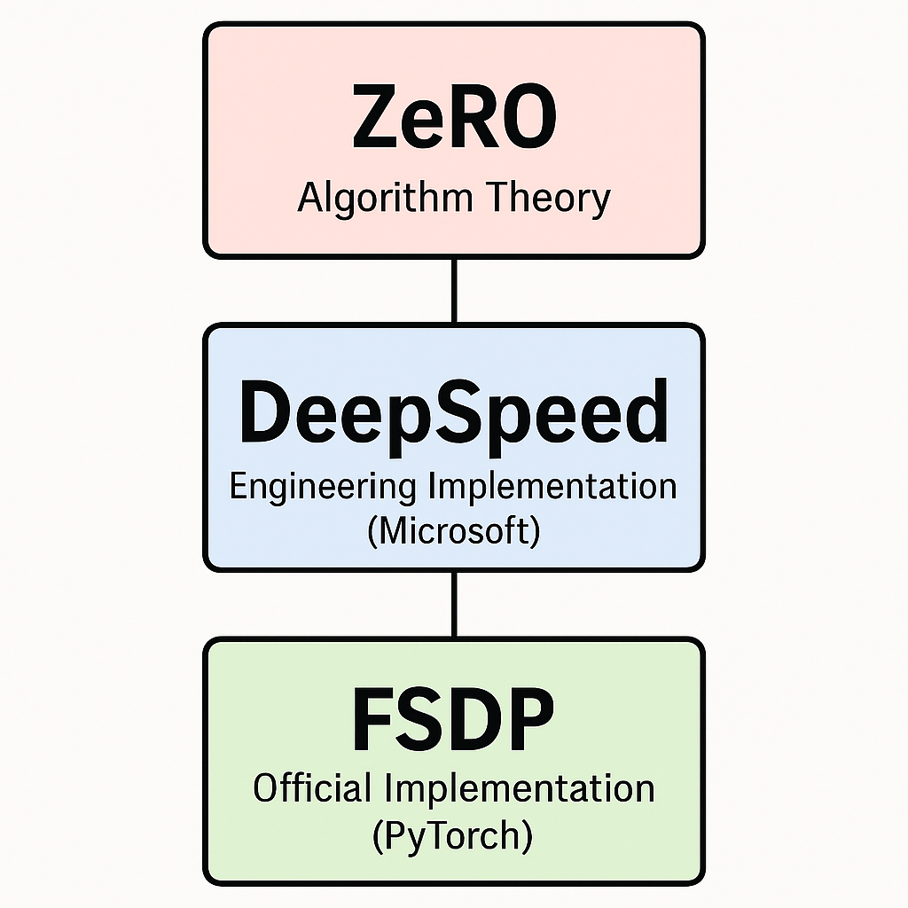

分布式训练总览：DP、DDP、FSDP、ZeRO 怎么选
为什么需要分布式训练
训练 LLM 时，单卡经常会被三类东西撑爆：模型参数、梯度、优化器状态。尤其是 Adam 这类优化器，除了参数本身，还要保存一阶、二阶动量；模型越大，这些状态越快成为显存瓶颈。
分布式训练的目标不是简单地“多插几张卡”，而是把训练中的数据、模型参数、梯度和优化器状态合理拆开，让每张 GPU 做自己擅长的一部分工作。
可以先记住一个很实用的判断：
- 模型单卡能放下，想提高吞吐：优先用 DDP。
- 模型单卡放不下，显存是主要瓶颈：考虑 FSDP 或 DeepSpeed ZeRO。
- 模型已经大到需要拆层、拆矩阵：需要 Megatron-LM 这类 TP、PP、DP 组合方案。
DP、DDP、FSDP 对比
| 特性 | DP | DDP | FSDP |
|---|---|---|---|
| 模型副本 | 每卡一份完整副本 | 每卡一份完整副本 | 参数被分片存放 |
| 通信方式 | 主进程聚合 | NCCL AllReduce | 参数、梯度、优化器状态分片同步 |
| 显存占用 | 高 | 高 | 低 |
| 通信开销 | 中 | 低 | 高 |
| 适用场景 | 小模型、快速实验 | 中大型模型、多卡训练默认选择 | Billion 级以上大模型 |
| 实现复杂度 | 简单 | 中等 | 高 |
DP 和 DDP 都属于数据并行：每张卡拿到不同的数据，模型本身仍然完整复制。区别在于 DP 通常是单进程多线程，主卡负担重；DDP 是多进程，每个进程控制一张卡，通信效率更高。
FSDP 则进一步拆掉了“每张卡都保存完整模型状态”这个前提。它会把参数、梯度、优化器状态切分到不同 GPU 上，训练时按需聚合，计算完成后再释放或重新分片。
ZeRO、DeepSpeed、FSDP 的关系

| 特性 | ZeRO | DeepSpeed | FSDP |
|---|---|---|---|
| 本质 | 算法思想 | 分布式训练框架 | PyTorch 原生分片训练实现 |
| 实现者 | Microsoft Research | Microsoft | PyTorch Core Team |
| 支持能力 | ZeRO-1/2/3 | ZeRO-1/2/3、Offload、Pipeline、TP 等 | 类似 ZeRO-3 的全分片训练 |
| 集成方式 | 需要框架实现 | deepspeed.initialize() |
FSDP(model) |
| 易用性 | 偏理论 | 封装完善，能力多 | PyTorch 原生，生态顺手 |
| 适用场景 | 理解分片思路 | 超大模型训练与复杂并行组合 | 通用 PyTorch 大模型训练 |
三者最容易混淆，可以这样理解：
- ZeRO 是一套降低冗余显存的算法思想。
- DeepSpeed 是微软围绕 ZeRO 做出的工程框架，同时集成了 offload、pipeline、tensor parallel 等能力。
- FSDP 是 PyTorch 官方提供的全分片数据并行实现，核心思路和 ZeRO-3 很接近。
选型建议
如果你只是把 BERT、较小的 Transformer 或几亿参数模型放到多卡上训练，DDP 通常是最稳的起点。它的通信模式清晰，生态成熟，出问题也更容易定位。
如果你训练的是 LoRA 之外的完整大模型，显存已经成为主要矛盾，就应该优先看 FSDP 或 DeepSpeed ZeRO。FSDP 的优势是 PyTorch 原生；DeepSpeed 的优势是能力完整，尤其适合更复杂的工程训练栈。
如果模型规模继续扩大，仅仅分片参数还不够，就要进入 Megatron-LM 的世界：把同一层的矩阵运算切开，把不同层切到不同 GPU，再叠加数据并行和 ZeRO。
一句话总结
DDP 解决“多卡怎么更快训练”，FSDP 和 ZeRO 解决“模型太大怎么放得下”，Megatron-LM 解决“超大模型怎么把计算也拆开”。